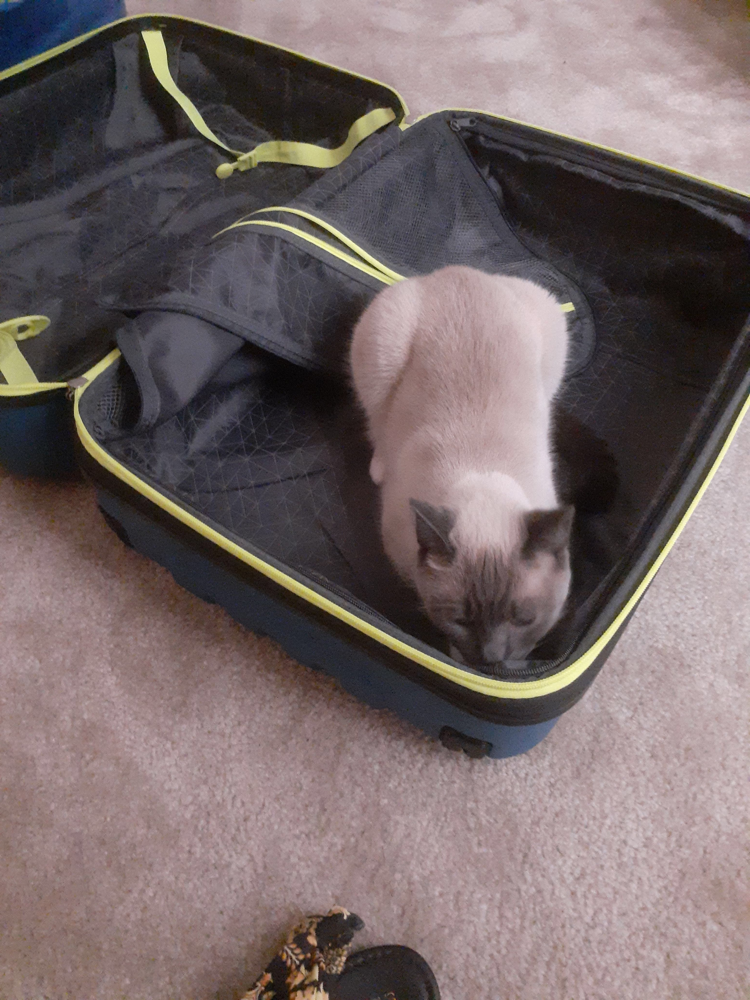
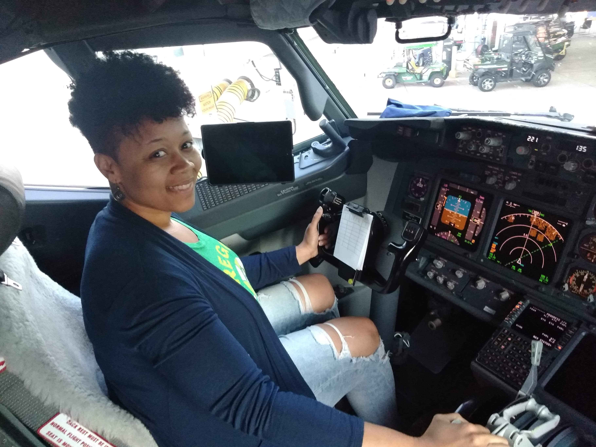
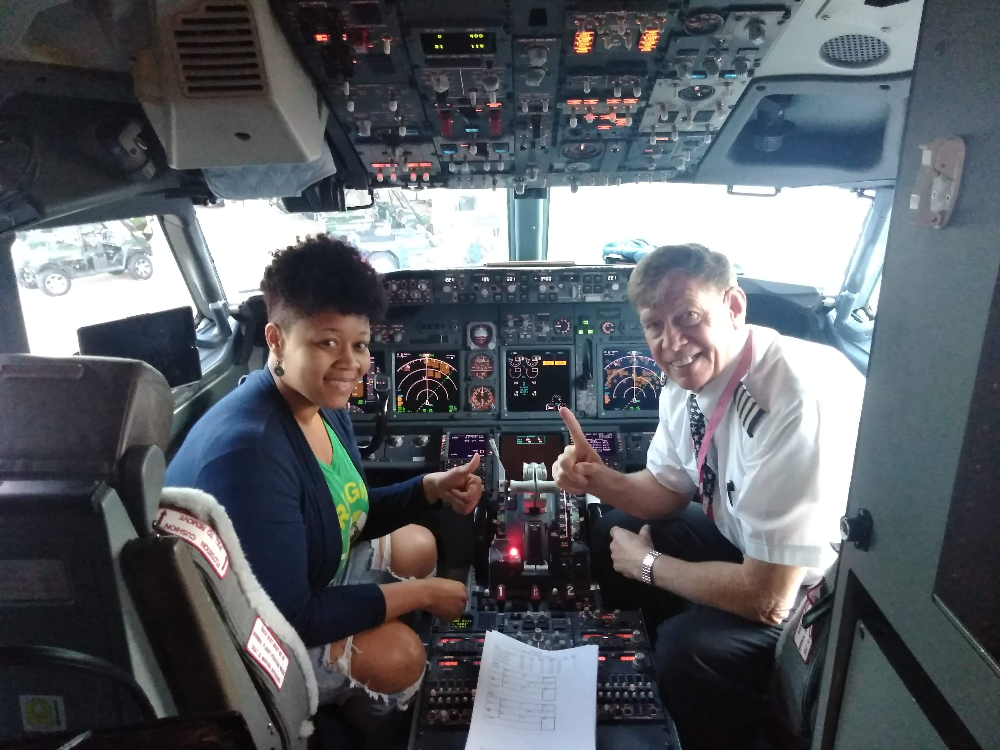

THE PLAN
So this whole crazy ordeal started with myself and my personal thoughts about not letting my fear of flying punk me. One of my best friends, Sam, who lived in California at that time, had a birthday coming up and she wanted to celebrate it in Las Vegas. All of my friends knew I'd never flown before but they had no clue how insane my fear of heights was. Of course I told her I'd be there but I said calmly, I'll drive. While my friends laughed so hard at my response, I was super serious! This was the point where I came to the conclusion that my fear of heights was not going to bully me any longer. My other friend, Moni who lives in St Louis with me, gave me her flight information and I purchased my ticket. Luckily, there were a few seats left on that same flight. Whew!
THE NIGHT BEFORE
My cute kitty Zeno either didn't want me to go or wanted to stow away in my luggage, not sure which but I had to keep removing him from standing in my luggage. As I began finalizing everything I had already packed, really just tossing extra stuff in my luggage at that moment, I had recalled Moni telling me about the weight check of my bag. After going back through everything and making sure the million and one outfits and shoes were ABSOLUTELY necessary (that many really was not!) I finally zipped my luggage closed and tried to rest before my early 6:35am flight.
TODAY'S THE DAY!: "Four Hours of Internal Terror"
Although mentally, I felt super lucky to have a "Flight Buddy" for my first newby flight, my physical body didn't exactly agree with me. Going through the TSA check wasn't as bad as the stories I had heard, but as I said, my body didn't agree. As I stood in the body scanner feet spread apart and arms above my head mocking the image in front of me thinking, this is pretty cool. As soon as I stepped out of the scanner the TSA Agent says to me "Ma'am you have a hot spot in your mid area". Hot spot? Mid area?!? I'm thinking what the heck does THAT mean?! The agent continues to say "I need you to step over here ma'am and hold your palms up." At this very moment I thought, THE STORIES ARE TRUE!! And I'm almost certain my face conveyed that same anguish I was experiencing internally. She preceeded to swipe my palms with what looked like a wet wipe. So now I'm REALLY flipping out inside because WHAT THE HECK IS SHE WIPING ON MY HANDS?! SOMEONE HELP! IS THIS NORMAL! As I glanced around everyone was moving about, doing their own thing and cycling through the security check. Then I spot my friend standing behind the TSA agent asking "Is all this necessary?" She literally read my mind. After the agent checked whatever it is she had to check after harrassing my palms, she calmly said "you're good to go ma'am". I grabbed all my items out of the tray, slid my shoes back on and my friend and I proceeded to our terminal. She then says to me "What the heck was that all about!?"; I laughed so hard because I was thinking the same thing! Finally, my letter group is called and I'm off to boarding the plane... I'm super geeked at that moment but also trying to drown out my nervousness. I find my seat next to the window and get settled in while everyone around me is shoving things up in the overhead and bumping shoulders with their bag as they shuffle through the isle. My friend starts a prayer as we began backing out to begin takeoff. Seconds later, and I mean literally SECONDS later, after the prayer she was head nodded to the left asleep. Instantly I thought, oh no! I'm all alone (on a plane full of people). Takeoff was actually amazing! Because I love fast cars and turbos and stuff so it was an adrenaline rush for me...until I realized we were no longer rolling down the runway; we were heading up unto that blue sky way above the ground. Curiosity pulled at me to take a peek out the window and the second I did, I instantly remembered why I hadn't flown before. My fear of heights had rulled me for so long and I was determined not to let it bully me all my life. I sat back for a minute, listened to my music and tried to relax. After a while, I checked my time and we had just under an hour left before reaching Las Vegas. I looked over at my friend, still on the "head nod". Then out of nowhere came the internal terror. I was literally flipping out in my head, thinking this plane needs to land NOW! WHY ARE WE STILL FLYING?! It took every sane bone in my body to keep myself from hopping up and running through the isle trying to exit the plane. The clip from the movie Bridesmaids when Annie snatched up the overhead phone and said "there's a colonial woman on the wing! It's something they're not telling us!" is exactly what was going on in my head. I managed to remain calm externally until the plane finally landed. It was such a huge relief! But I knew I had to prepare my mind again for the ride back home. Although, one amazing thing did happen as I was exiting the plane. The pilot was standing at the front of the isle saying goodbye as passengers were getting off. As I reached that heavenly doorway to finally get off that plane, Moni blurted out from behind me to the pilot pointing at me "this her first time flying!". The pilots eyes lit up and a huge smile came across his face, "Oh really?!" he says. I responded with a yes as I glanced down and saw the kids I was towering over waiting to meet the pilot as they got off. "Well come on up here, take a seat."I was blowned away! Take a seat? Where?!? His hand motioned towards his Captain's Chair. So at this very moment, I was internally doing cartwheels down the isle. I slid into his seat, which is very tight and intimidating by the way, daring not to touch a THING! The pilot snapped a few pics, and motioned for me to snap a pic with him. That ending experience by far drowned out all the craziness that swirled around in my head for those 4 hours.
  